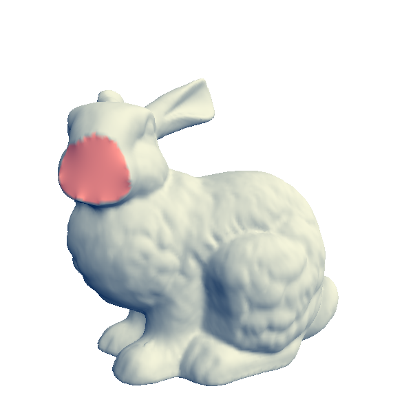
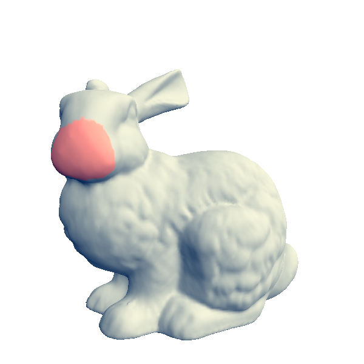
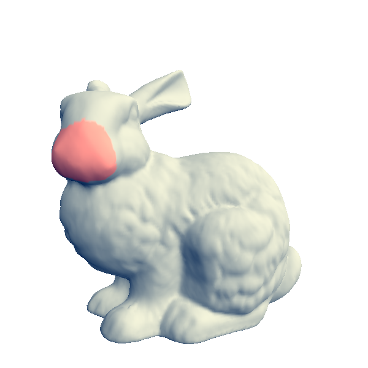

L'objectif de ce TD était de mettre en oeuvre une méthode d'éléments finis pour la
résolution de l'équation de Laplace sur un maillage triangulaire. Cela permet plusieurs
application tel que la reconstruction poly-harmonique, le bouchage de trous et la déformations
interactive.
2. Création de la matrice Laplacienne
La premiére étape était de créer la matrice Laplacienne pour l'ensemble du maillage.
/// Computes the Laplacian matrix in matrix \a L using cotangent weights or the graph Laplacian if useCotWeights==false.
void create_laplacian_matrix(const Surface_mesh& mesh, SpMat& L, bool useCotWeights)
{
// number of vertices in mesh
int n = mesh.n_vertices();
std::vector tripletList;
tripletList.reserve(n);
Surface_mesh::Vertex_iterator vit;
for (vit = mesh.vertices_begin(); vit != mesh.vertices_end(); ++vit) {
// halfedge circulator
float wii = 0.f;
Surface_mesh::Vertex vi = *vit;
Surface_mesh::Vertex_around_vertex_circulator vj, vj_end;
vj = mesh.vertices(*vit);
vj_end = vj;
do {
float wij = useCotWeights ? cotan_weight(mesh, vj.halfedge()) : 1.0; // need to compute the weight
tripletList.push_back(T(vi.idx(), (*vj).idx(), wij));
wii += wij;
} while(++vj != vj_end);
tripletList.push_back(T(vi.idx(), vi.idx(), -wii));
}
L.setFromTriplets(tripletList.begin(), tripletList.end());
}
3. Isolation des inconnues (ré-ordonnacement)
L'étape d'après consistait à isoler les inconnues en ré-ordonnant les équations et les sommets (ayant un v:mask à 1).
/// Computes the permutation putting selected vertices (mask==1) first, and the others at the end.
/// It returns the number of selected vertices.
int create_permutation(const Surface_mesh& mesh, Permutation& perm)
{
auto masks = mesh.get_vertex_property("v:mask");
// number of vertices in mesh
int n = mesh.n_vertices();
perm.resize(n);
int nb_unknowns = 0, nb_knowns = n-1;
Surface_mesh::Vertex_iterator vit;
for (vit = mesh.vertices_begin(); vit != mesh.vertices_end(); ++vit) {
Surface_mesh::Vertex vi = *vit;
if (masks[vi] == 1) {
perm.indices()[vi.idx()] = nb_unknowns;
nb_unknowns++;
} else {
perm.indices()[vi.idx()] = nb_knowns;
nb_knowns--;
}
}
return nb_unknowns;
}
4. Résolution du système
Ensuite, il fallait résoudre le système de l'équation 4. On a utiliser une factorisation
de Cholesky comme demandé.
/// Performs the poly-harmonic interpolation (order k) over the selected vertices (mask==1) of the vertex attributes u.
/// For each vertex V of index i,
/// if mask[V]!=1 then u.col(i) is used as input constraints,
/// otherwise, mask[V}==1, and u.col(i) is replaced by the poly-harmonic interpolation of the fixed values.
void poly_harmonic_interpolation(const Surface_mesh& mesh, Ref u, int k)
{
// Number of vertices in the mesh
int n = mesh.n_vertices();
// 1 - Create the sparse Laplacian matrix
SpMat L(n,n);
create_laplacian_matrix(mesh, L, true);
// 2 - Create the permutation matrix putting the fixed values at the end,
// and the true unknown at the beginning
Permutation perm;
int nb_unknowns = create_permutation(mesh, perm);
// 3 - Apply the permutation to both rows (equations) and columns (unknowns),
// i.e., L = P * L * P^-1
// multiplication à gauche par P : modification des colonnes
// droite : modification des lignes
L = L.twistedBy(perm); // Equivalent to L = perm * L * perm.inverse() but faster
SpMat L00 = L.topLeftCorner(nb_unknowns, nb_unknowns);
SpMat L01 = L.topRightCorner(nb_unknowns, n - nb_unknowns);
// 4 - solve L * [x^T u^T]^T = 0, i.e., L00 x = - L01 * u
MatrixXf u_prime = perm * u.transpose();
SimplicialLDLT solver;
solver.compute(L00);
u_prime.topRows(nb_unknowns) = solver.solve(- L01 * u_prime.bottomRows(n - nb_unknowns));
// 5 - Copy back the results to u
u_prime = perm.inverse() * u_prime;
u = u_prime.transpose();
}
Sélection

Reconstruction harmonique
5. Reconstruction bi-harmonique et tri-harmonique
Afin d'obtenir des résulats plus lisses, nous avons implémenter une reconstruction d'ordre
supérieur (k) en applicant l'opérateur Laplacien k fois.
void poly_harmonic_interpolation(const Surface_mesh& mesh, Ref u, int k)
{
// ...
// 1 - Create the sparse Laplacian matrix
SpMat L(n,n);
create_laplacian_matrix(mesh, L, true);
SpMat Ltmp = SpMat(L);
for (int i = 1; i < k; ++i) {
L = L * Ltmp;
}
// ...
}

Reconstruction bi-harmonique

Reconstruction tri-harmonique
6. Formules des co-tangentes
Nous avons ensuite mis à jour la fonction du calcul de la matrice en prenant en compte les poids.
Reconstruction poly-harmonique avec coût cotangent
7. Déformation interactive
Afin de pouvoir gérer les déformations de façons interactive, nous avons rajouté la possibilité
pour l'utiliser de sélectionner un sommets et de le déplacer à l'aide des touche 'p' et 'P'.
Nous avons donc rajouté dans le fichier mesh.h :